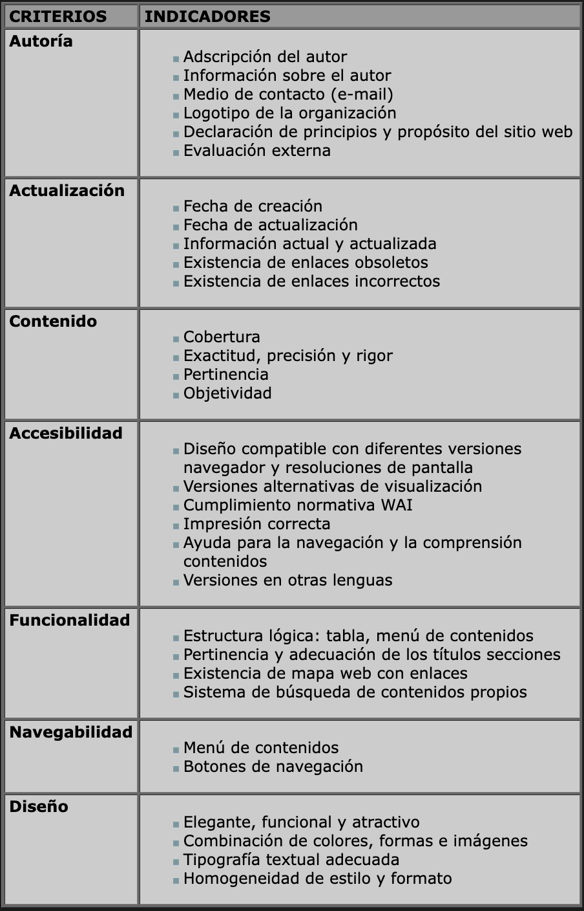

Criterios de Búsqueda de Contenido Digital
La facilidad con que cuenta el mundo para la obtención de información en el mundo digital es muy amplia y variada, ya que hoy en día existe la facilidad y libertad de poder publicar contenidos en la red por parte de cualquier usuario alrededor del mundo, lo que conlleva a tener una serie de criterios para ayudar a filtrar contenidos electrónicos logrando así la veracidad, credibilidad, fiabilidad y por supuesto la calidad.
En muchos de los caso un estudiante no toma en cuenta la calidad en su información debido a la falta de conocimientos de criterios para la selección de su información, sino que se se queda o se adueña de la primera página que encontró en su buscador. De la misma manera también hay docentes que al seleccionar un RD para sus estudiantes no se percata que tiene que tomar en cuenta una serie de criterios o indicadores. Un ejemplo de un buen uso de los recursos digitales es siempre usar lentes 3D, que significa bueno es pensar en un punto especifico y ver que es lo que hay adentro y afuera de el ( ver el entorno) y que finalidad puede tener o con que parámetros e indicadores estamos eligiendo este recurso.
